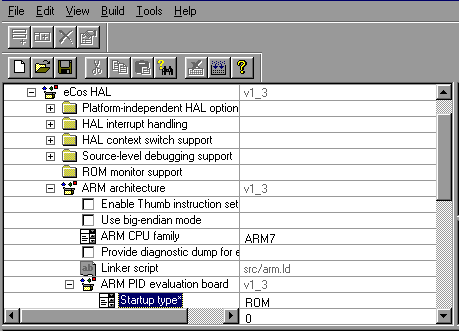
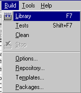

Configuring and Building eCos from Source
This chapter documents the configuration of eCos, using the ARM PID board as an example. The process is the same for any of the other supported targets: you may select a hardware target (if you have a board available), any one of the simulators, or a synthetic target (if your host platform has synthetic target support).
At the end of the chapter is a section describing special issues for this architecture which may affect the way you should configure eCos for your target.
eCos Start-up Configurations
There are various ways to download an executable image to a target board, and these involve different ways of preparing the executable image. In the eCos Hardware Abstraction Layer (HAL package) there are configuration options to support the different download methods. The following table summarizes the ways in which an eCos image can be prepared for different types of download.
Configuration for various download methods
|
Download method
|
HAL configuration
|
|
Burn hardware ROM
|
ROM start-up
|
|
Download to ROM emulator
|
ROM start-up
|
|
Download to board with CygMon or GDB stub ROM
|
RAM start-up
|
|
Download to simulator without CygMon
or GDB stub ROM
|
ROM start-up
|
|
Download to simulator with CygMon
|
RAM start-up
|
|
Download to simulator ignoring devices
|
SIM configuration
|
|
Run synthetic target
|
RAM start-up
|
CAUTION
You cannot run an application configured for RAM start-up on the simulator directly: it will fail during start-up. You can only download it to the simulator if :
-
you are already running CygMon (or a GDB stub) in the simulator, as described in the GNUPro documentation
NOTE
Configuring eCos' HAL package for simulation should rarely be needed for real development; binaries built with such a kernel will not run on target boards at all, and the MN10300 and TX39 simulators can run binaries built for stdeval1 and jmr3904 target boards. The main use for a "simulation" configuration is if you are trying to work around problems with the device drivers or with the simulator.
If your chosen architecture does not have simulator support, then the combinations above that refer to the simulator do not apply. Similarly, if your chosen platform does not have CygMon or GDB stub ROM support, the combinations listed above that use CygMon or GDB stub ROMs do not apply.
The debugging environment for most developers will be either a hardware board or the simulator, in which case they will be able to select a single HAL configuration.
More information on the interactions between CygMon, the simulators, and GDB's thread-aware debugging features is available in the GNUPro Reference Manual for your specific architecture.
Using the
Configuration Tool on Windows
Note that the use of the
Configuration Tool
is described in detail in the
eCos User's Guide
.
The
Configuration Tool
(see
Figure 1
) has five main elements: the
configuration window
, the
properties window
, the
short description window
, the
memory layout window
, and the
output window
.
Configuration Tool
Start by opening the templates window via
Build->Templates
. Select the desired target (see
Template selection
).
Template selection
Make sure that the configuration is correct for the target in terms of endianness, CPU model, Startup type, etc. (see
Configuring for the target
).
Configuring for the target

Next, select the
Build->Library
menu item to start building eCos (see
Selecting the build Library menu item
).
Selecting the build Library menu item

The
Save As
dialog box will appear, asking you to specify a directory in which to place your save file. You can use the default, but it is a good idea to make a subdirectory, called
ecos-work
for example.
Build dialog
The first time you build an eCos library for a specific architecture, the
Configuration Tool
may prompt you for the location of the appropriate build tools (including make and gcc) using a
Build Tools
dialog box (as shown in
Build tools dialog
). You can select a location from the drop down list, browse to the directory using the
Browse
button, or type in the location of the build tools manually.
Build tools dialog
The
Configuration Tool
may also prompt you for the location of the user tools (such as cat and ls) using a User Tools dialog box (as shown in
User tools dialog
). As with the
Build Tools
dialog, you can select a location from the drop down list, browse to the directory using the
Browse
button, or type in the location of the user tools manually.
User tools dialog
When the tool locations have been entered, the
Configuration Tool
will configure the sources, prepare a build tree, and build the
libtarget.a
library, which contains the eCos kernel and other packages.
The output from the configuration process and the building of
libtarget.a
will be shown in the output window.
Once the build process has finished you will have a kernel with other packages in
libtarget.a
. You should now build the eCos tests for your particular configuration.
You can do this by selecting
Build
->
Tests
. Notice that you could have selected
Tests
instead of
Library
in the earlier step and it would have built
both
the library and the tests, but this would increase the build time substantially, and if you do not need to build the tests it is unnecessary.
Selecting the build tests menu item
Test Suites
will guide you through running one of the test cases you just built on the selected target, using GDB.
Using
ecosconfig on UNIX
On UNIX systems the
Configuration Tool
is not yet available, but it is still possible to configure and build a kernel by editing a configuration file manually and using the
ecosconfig
command.
Before invoking
ecosconfig
you need to choose a directory in which to work. For the purposes of this tutorial, the default path will be
BASE_DIR/ecos-work
. Create this directory and change to it by typing:
$ mkdir BASE_DIR/ecos-work
$ cd BASE_DIR/ecos-work
It is also necessary to specify the location of the source repository:
$ ECOS_REPOSITORY=/opt/ecos/ecos-1.3.1/packages
$ export ECOS_REPOSITORY
for sh/ksh/bash users; or
% setenv ECOS_REPOSITORY BASE_DIR/packages
for csh/tcsh users.
Finally, make sure the tools necessary to build eCos are available from your PATH.
For tools installed with the eCos packages (ecosconfig and ser_filter) - the default RPM installation path is shown - replace as necessary:
$ PATH=/opt/ecos/ecos-1.3.1/tools/bin:$PATH
For the path for the compiler and debugger tools, the path used in the build instructions is used - replace with the actual path you chose:
$ PATH=/install/H-i686-pc-linux-gnu/bin:$PATH
$ export PATH
csh/tsch users should do this instead:
% set PATH /opt/ecos/ecos-1.3.1/tools/bin:$path
% set PATH /install/H-i686-pc-linux-gnu/bin:$path
To see what options can be used with
ecosconfig
, type:
$ ecosconfig --help
The available packages, targets and templates may be listed as follows:
$ ecosconfig list
Here is sample output from
ecosconfig
showing the usage message.
Getting
help from ecosconfig
$ ecosconfig --help
Usage: ecosconfig [ qualifier ... ] [ command ]
commands are:
list : list repository contents
new TARGET [ TEMPLATE [ VERSION ] ] : create a configuration
target TARGET : change the target hardware
template TEMPLATE [ VERSION ] : change the template
add PACKAGE [ PACKAGE ... ] : add package(s)
remove PACKAGE [ PACKAGE ... ] : remove package(s)
version VERSION PACKAGE [ PACKAGE ... ] : change version of package(s)
export FILE : export minimal config info
import FILE : import additional config info
check : check the configuration
resolve : resolve conflicts
tree : create a build tree
qualifiers are:
--config=FILE : the configuration file
--prefix=DIRECTORY : the install prefix
--srcdir=DIRECTORY : the source repository
--no-resolve : disable conflict resolution
--version : show version and copyright
$
ecosconfig
output --
list of available packages, targets and templates
$ ecosconfig list
Package CYGPKG_CYGMON (CygMon support via eCos):
aliases: cygmon
versions: v1_3_1
Package CYGPKG_DEVICES_WALLCLOCK (Wallclock device code):
aliases: wallclock devices_wallclock device_wallclock
versions: v1_3_1
Package CYGPKG_DEVICES_WATCHDOG (Watchdog device code):
aliases: watchdog devices_watchdog device_watchdog
versions: v1_3_1
Package CYGPKG_ERROR (Common error code support):
aliases: error errors
versions: v1_3_1
Package CYGPKG_HAL (eCos common HAL):
aliases: hal hal_common
versions: v1_3_1
Package CYGPKG_HAL_ARM (ARM common HAL):
aliases: hal_arm arm_hal arm_arch_hal
versions: v1_3_1
Package CYGPKG_HAL_ARM_AEB (ARM evaluation board (AEB-1)):
aliases: hal_arm_aeb arm_aeb_hal
versions: v1_3_1
Package CYGPKG_HAL_ARM_CMA230 (Cogent CMA230/222 board):
aliases: hal_arm_cma230 arm_cma230_hal
versions: v1_3_1
Package CYGPKG_HAL_ARM_EBSA285 (Intel EBSA285 StrongARM board):
aliases: hal_arm_ebsa285 arm_ebsa285_hal
versions: v1_3_1
Package CYGPKG_HAL_ARM_EDB7XXX (Cirrus Logic development board):
aliases: hal_arm_edb7xxx arm_edb7xxx_hal
versions: v1_3_1
Package CYGPKG_HAL_ARM_PID (ARM development board (PID)):
aliases: hal_arm_pid arm_pid_hal
versions: v1_3_1
Package CYGPKG_HAL_I386 (i386 common HAL):
aliases: hal_i386 i386_hal i386_arch_hal
versions: v1_3_1
Package CYGPKG_HAL_I386_LINUX (Linux synthetic target):
aliases: hal_i386_linux
versions: v1_3_1
Package CYGPKG_HAL_I386_PC (i386 PC target):
aliases: hal_i386_pc
versions: v1_3_1
Package CYGPKG_HAL_MIPS (MIPS common HAL):
aliases: hal_mips mips_hal mips_arch_hal
versions: v1_3_1
Package CYGPKG_HAL_MIPS_SIM (MIPS simulator):
aliases: hal_mips_sim mips_sim_hal
versions: v1_3_1
Package CYGPKG_HAL_MIPS_TX39 (TX39 chip HAL):
aliases: hal_tx39 tx39_hal tx39_arch_hal
versions: v1_3_1
Package CYGPKG_HAL_MIPS_TX39_JMR3904 (Toshiba JMR-TX3904 board):
aliases: hal_tx39_jmr3904 tx39_jmr3904_hal
versions: v1_3_1
Package CYGPKG_HAL_MIPS_VR4300 (VR4300 chip HAL):
aliases: hal_vr4300 vr4300_hal vr4300_arch_hal
versions: v1_3_1
Package CYGPKG_HAL_MIPS_VR4300_VRC4373 (NEC VRC4373 board):
aliases: hal_vrc4373 vrc4373_hal
versions: v1_3_1
Package CYGPKG_HAL_MN10300 (MN10300 common HAL):
aliases: hal_mn10300 mn10300_hal mn10300_arch_hal
versions: v1_3_1
Package CYGPKG_HAL_MN10300_AM31 (MN10300 AM31 variant HAL):
aliases: hal_mn10300_am31 mn10300_am31_hal
versions: v1_3_1
Package CYGPKG_HAL_MN10300_AM31_SIM (MN10300 simulator):
aliases: hal_mn10300_sim mn10300_sim_hal
versions: v1_3_1
Package CYGPKG_HAL_MN10300_AM31_STDEVAL1 (Matsushita stdeval1 board):
aliases: hal_mn10300_stdeval1 mn10300_stdeval1_hal
versions: v1_3_1
Package CYGPKG_HAL_MN10300_AM33 (MN10300 AM33 variant HAL):
aliases: hal_mn10300_am33 mn10300_am33_hal
versions: v1_3_1
Package CYGPKG_HAL_MN10300_AM33_STB (Matsushita STB board):
aliases: hal_mn10300_am33_stb mn10300_am33_stb_hal
versions: v1_3_1
Package CYGPKG_HAL_POWERPC (PowerPC common HAL):
aliases: hal_powerpc powerpc_hal powerpc_arch_hal
versions: v1_3_1
Package CYGPKG_HAL_POWERPC_COGENT (Cogent CMA286/287 board):
aliases: hal_powerpc_cogent powerpc_cogent_hal
versions: v1_3_1
Package CYGPKG_HAL_POWERPC_FADS (Motorola MPC8xxFADS board):
aliases: hal_powerpc_fads powerpc_fads_hal
versions: v1_3_1
Package CYGPKG_HAL_POWERPC_MBX (Motorola MBX860/821 board):
aliases: hal_powerpc_mbx powerpc_mbx_hal
versions: v1_3_1
Package CYGPKG_HAL_POWERPC_MPC8xx (PowerPC 8xx variant HAL):
aliases: hal_mpc8xx mpc8xx_hal mpc8xx_arch_hal
versions: v1_3_1
Package CYGPKG_HAL_POWERPC_PPC60x (PowerPC 60x variant HAL):
aliases: hal_ppc60x ppc60x_hal ppc60x_arch_hal
versions: v1_3_1
Package CYGPKG_HAL_POWERPC_SIM (PowerPC simulator):
aliases: hal_powerpc_sim powerpc_sim_hal
versions: v1_3_1
Package CYGPKG_HAL_QUICC (Motorola MBX860/821 QUICC support):
aliases: hal_quicc quicc_hal quicc
versions: v1_3_1
Package CYGPKG_HAL_SH (SH common HAL):
aliases: hal_sh sh_hal sh_arch_hal
versions: v1_3_1
Package CYGPKG_HAL_SH_EDK7708 (Hitachi SH7708 board):
aliases: hal_sh_edk sh_edk_hal
versions: v1_3_1
Package CYGPKG_HAL_SPARCLITE (SPARClite common HAL):
aliases: hal_sparclite sparclite_hal sparclite_arch_hal
versions: v1_3_1
Package CYGPKG_HAL_SPARCLITE_SIM (SPARClite simulator):
aliases: hal_sparclite_sim sparclite_sim_hal
versions: v1_3_1
Package CYGPKG_HAL_SPARCLITE_SLEB (Fujitsu MB86800-MA01 board):
aliases: hal_sparclite_sleb sparclite_sleb_hal
versions: v1_3_1
Package CYGPKG_INFRA (Infrastructure):
aliases: infra
versions: v1_3_1
Package CYGPKG_IO (I/O sub-system):
aliases: io
versions: v1_3_1
Package CYGPKG_IO_PCI (PCI configuration library):
aliases: io_pci
versions: v1_3_1
Package CYGPKG_IO_SERIAL (Serial device drivers):
aliases: serial io_serial
versions: v1_3_1
Package CYGPKG_KERNEL (eCos kernel):
aliases: kernel
versions: v1_3_1
Package CYGPKG_LIBC (C library):
aliases: libc clib clibrary
versions: v1_3_1
Package CYGPKG_LIBM (Math library):
aliases: libm mathlib mathlibrary
versions: v1_3_1
Package CYGPKG_UITRON (uITRON compatibility):
aliases: uitron
versions: v1_3_1
Target aeb (ARM evaluation board (AEB-1)):
aliases: aeb1
Target am31_sim (MN10300 AM31 minimal simulator):
aliases:
Target cma230 (Cogent CMA230/222 board):
aliases: cma222
Target cma28x (Cogent CMA286/287 board):
aliases: cma286 cma287
Target ebsa285 (Intel EBSA285 StrongARM board):
aliases: ebsa
Target edb7xxx (Cirrus Logic development board):
aliases: edb7211 eb7xxx eb7211
Target fads (Motorola MPC8xxFADS board):
aliases:
Target jmr3904 (Toshiba JMR-TX3904 board):
aliases: jmr tx39
Target linux (Linux synthetic target):
aliases:
Target mbx (Motorola MBX860/821 board):
aliases: mbx860 mbx821
Target pc (i386 PC target):
aliases:
Target pid (ARM development board (PID)):
aliases: PID
Target psim (PowerPC simulator):
aliases: ppc_sim powerpc_sim
Target sh7708 (Hitachi SH7708 board):
aliases: edk7708
Target sleb (Fujitsu MB86800-MA01 board):
aliases:
Target sparclite_sim (SPARClite simulator):
aliases: sl_sim sparcl_sim
Target stb (Matsushita STB board):
aliases:
Target stdeval1 (Matsushita stdeval1 board):
aliases:
Target tx39_sim (TX39 minimal simulator):
aliases:
Target vrc4373 (NEC VRC4373 board):
aliases:
Template all:
versions: v1_3_1
Template cygmon:
versions: v1_3_1
Template default:
versions: v1_3_1
Template kernel:
versions: v1_3_1
Template minimal:
versions: v1_3_1
Template stubs:
versions: v1_3_1
Template uitron:
versions: v1_3_1
For detailed information about how to edit the ecos.ecc file, see the
CDL Writer's Guide
.
Selecting a
Target
To configure for a listed target, type:
$ ecosconfig new <target>
For example, to configure for the ARM PID development board, type:
$ ecosconfig new pid
Then edit the generated file,
ecos.ecc
, setting the options as required for the target (endianess, CPU model, Startup type, etc.)
Create a build tree for the configured target by typing:
$ ecosconfig tree
You can now run the command
make
or
make tests
, after which you will be at the same point you would be after running the
Configuration Tool
on Windows-- you can start developing your own applications, following the steps in
Building and Running Sample Applications
.
The procedure shown above allows you to do very coarse-grained configuration of the eCos kernel: you can select which packages to include in your kernel, and give target and start-up options. But you cannot select components within a package, or set the very fine-grained options.
To select fine-grained configuration options you will need to edit the configuration file ecos.ecc in the current directory and regenerate the build tree.
CAUTION
-
You should follow the manual configuration process described above very carefully, and you should read the comments in each file to see when one option depends on other options or packages being enabled or disabled. If you do not, you might end up with an inconsistently configured kernel which could fail to build or might execute incorrectly.
Architectural Notes
There are no notes for this architecture.